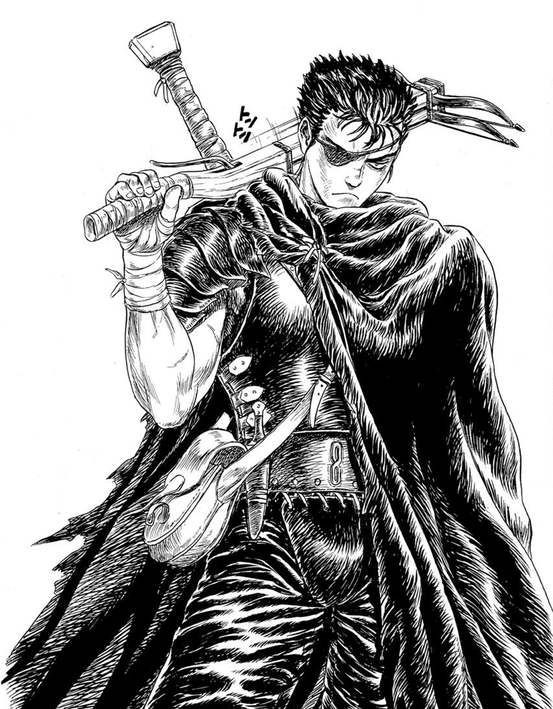
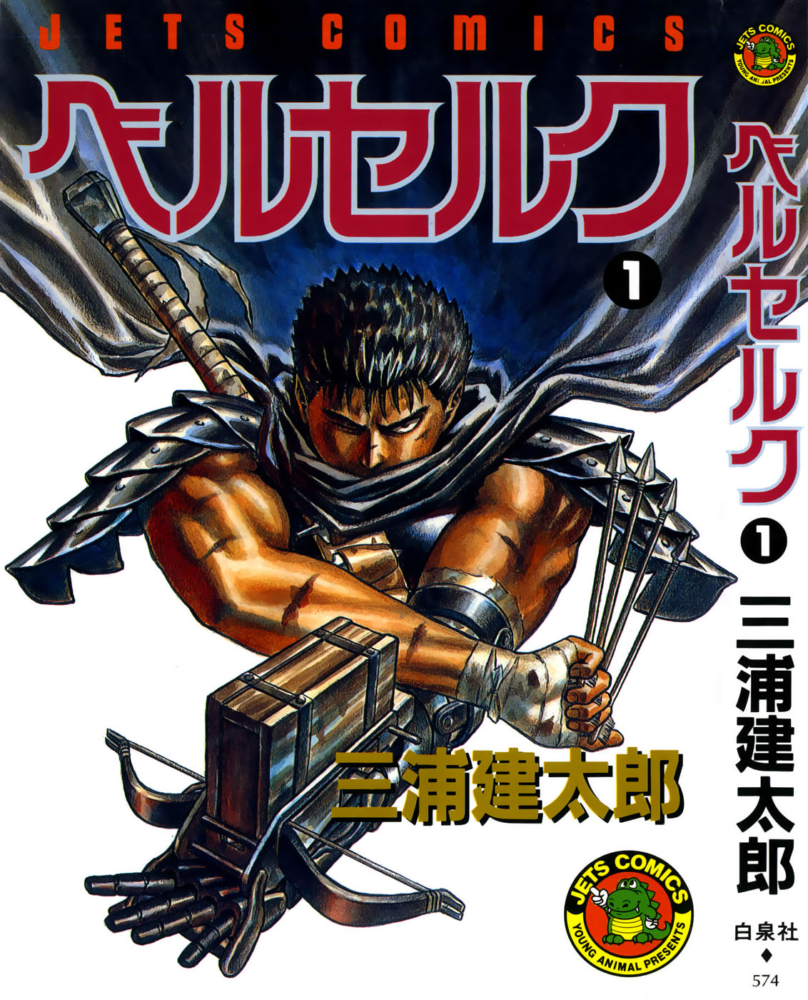
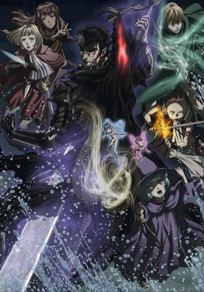

Berserk - The Prototype es una historia corta escrita y dibujada por Kentaro Miura en noviembre de 1988. Publicada en Gekkan KomiKomi, consta de un episodio de 47 páginas. Este manga sirvió de base para el actual manga de Berserk, aunque estos difieren en ciertos puntos.
Adaptaciones
One Shot
Manga
Debutó en la revista Monthly Animal House en agosto de 1989 Donde conseguirlo
Anime
Adaptacion 1997
Berserk (剣風伝奇ベルセルク Ken fū Denki Beruseruku?, también
conocido como Kenpuu Denki Berserk o Kenfu Denki Berserk), es una
adaptación animada del manga homónimo Berserk. Fue emitida entre
octubre de 1997 y marzo de 1998. Desarrollada por el estudio
Oriental Light and Magic, consta de 25 episodios; donde el primero
abarca la primera saga del manga omitiendo a personajes que
aparecían en ella como Puck e incluyendo a personajes que no
aparecían como Collette, mientras que el resto de episodios abarcan
gran parte de La Edad de Oro.
Se puede ver por Netflix
Adaptacion 2017
Es una serie de anime de 2016 basada en el manga Berserk de Kentaro Miura y fue hecha como una secuela de la trilogía Berserk: The Golden Age Arc. Esta es la segunda adaptación televisiva del manga, después del anime de 1997 con el mismo nombre, y que cubre los arcos argumentales «Espadachín Negro» -capítulo 1 al 8 de los tomos 1 al 3 del manga Disponible en Crunchyroll
Peliculas
En un proyecto que buscaba mostrar con una mejor animación los
sucesos que van más allá de la serie, se realizó una serie de
películas conocida como Trilogía de la Saga Dorada. Se estrenaron
tres de las tres películas planeadas inicialmente en Japón,
dirigidas por Toshiyuki Kubooka y la animación estando a cargo de
Studio 4°C. Las 3 peliculas no se encuentran en streaming como tal
pero Crunchyroll cuenta con la version Memorial Edition que recopila
las 3 peliculas en 13 capitulos.
Disponible en Crunchyroll